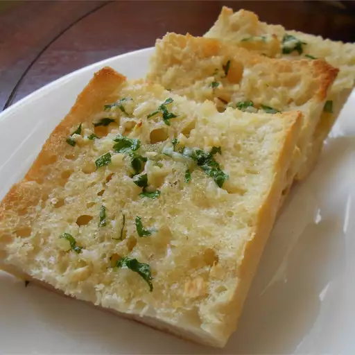

How to Make Garlic Bread

A simple, savoury classic side dish
Garlic bread is a classic side dish that can be made easily by anyone!
This simple recipe only requires seven simple ingredients and will better fresher garlic bread than the average pizza store
Ingredients
- 3 heads of garlic
- 2 tablespoons olive oil
- 1 loaf of Italian bread
- 1/2 cup of softened butter
- (optional) 2 tablespoons of grated parmesan cheese
- (optional) 1 tablespoon fresh choped parsley
Steps
- Preheat oven to 175 degrees celsius (350 degrees farenheit)
- Slice tops off garlic heads, exposing each clove and place garlic heads cut side up on a baking sheet and drizzle tops with oilive oil
- Bake in preheated oven for 30 minutes until garlic is soft
- set oven to broil
- Slice loaf horizontally and place cut side up on baking sheet
- Squeeze cloves from their skins into a medium bowl and stir in butter, cheese, and parsley until well blended and spread onto bread slices
- Broil bread for 5 minutes until toasted